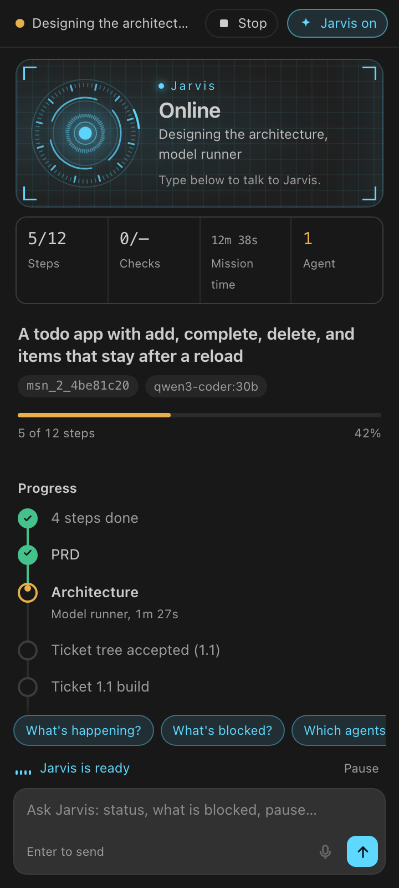
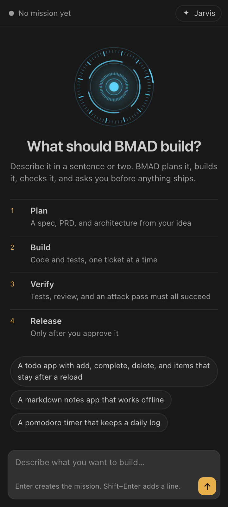
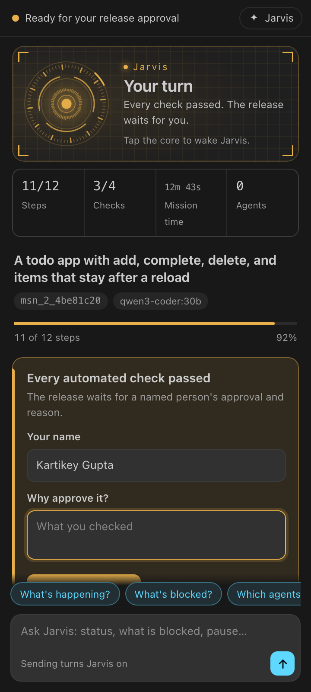
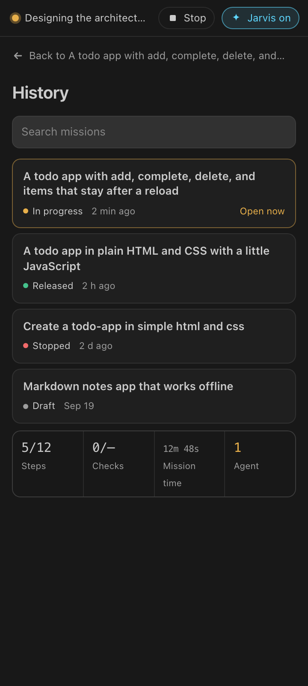

"Hey Jarvis" wakes it
Switch on the wake phrase and Jarvis waits for its name, in English or Hindi script. Anything you say after it is carried out at once: "Hey Jarvis, build me a pomodoro timer."
The BMAD Method on autopilot, inside VS Code
BMAD Next runs the BMAD Method's agents and workflows for you, turning one sentence into a planned, built, tested, reviewed, and attacked project. Talk to Jarvis in English, Hindi, or the language you think in. Nothing ships until every gate has evidence and you say yes.
BMAD is an open-source method for building software with AI agents: named expert roles and step-by-step workflows that carry an idea from analysis to shipped code. BMAD Next is its control plane. It runs BMAD's own skills, pinned to a known version, and adds what a method alone cannot: evidence at every gate.
BMAD's agents are experts with names, a point of view, and one job each. BMAD Next calls them at the right step, and you can talk to any of them directly.
Market and domain research, requirements, the product brief.
Turns the idea into a PRD with requirements you can test.
Flows, screens, and the experience before any code exists.
The decisions that keep separately built parts consistent.
Implements stories and code changes, with tests.
Test strategy, automation, traceability, and quality gates.
BMAD Next was planned and built with the BMAD Method itself: analysis first, then a PRD, architecture, and stories, before the code. The tool now runs that same discipline for you, and refuses to call anything done without proof.
Every mission walks the same line. Each step leaves evidence, and a step that fails stops the line until it is repaired, not until someone looks away.

One sentence in the panel, or say it out loud. "A todo app that keeps my list after a reload" is enough to start.
Three hard questions: who must succeed, what counts as done, what is out of scope. The model proposes answers and records them as assumptions you can see.
Planning skills write real documents into your repo. A step that writes outside its folder is quarantined; one that claims success without its files is retried.
The work is cut into tickets. Nothing is built until a named person accepts the tree, with a click or by telling Jarvis.
Each ticket gets its own git worktree. The coding agent writes the code and tests, then runs the tests itself before it may stop.
A green exit code is not enough. A test script that prints "verified" without running a single test is rejected.
A reviewer reads the diff against the requirements. An attacker then tries to break it. Either one can send the ticket back for repair.
What was built is checked against what was declared, and every requirement is traced to the evidence that proves it.
When every automated gate passes, the release waits for your name and your reason. Jarvis never approves on its own.
The release is recorded with its evidence. Every mission stays in your history, one click away.
Say "Hey Jarvis" and your request. It wakes, understands, acts through the same checked commands as the buttons, and answers in the language you spoke.
Switch on the wake phrase and Jarvis waits for its name, in English or Hindi script. Anything you say after it is carried out at once: "Hey Jarvis, build me a pomodoro timer."
Speech is recognised on your machine, which also detects the language. Ask "अभी क्या चल रहा है?" and hear the answer in Hindi, in a Hindi voice.
Talk without holding a button. Jarvis mutes its own microphone while it thinks and speaks, so it never answers itself.
"The Frontend Developer is building ticket 1.1." "Review found two blocking issues." Updates arrive as they happen, translated into your language.
Create a mission, continue, pause, stop, accept the tickets, approve the release with your reason. Every decision is recorded under your name.
Hold the Jarvis core, speak, let go. The microphone records only while you hold it, and typing works everywhere too.
Jarvis answers from the mission's recorded state: the running step, the agents at work, what is blocked. It is told never to invent progress.
Each role has one job and its own evidence. They disagree on purpose.
Writes the spec, PRD, and architecture, then cuts the work into tickets.
Implements one ticket in its own worktree and runs its tests before it stops.
Reads the diff against the requirements and fails what does not meet them.
Tries to break the build: bad input, corrupted storage, missing checks.
Passes only on recorded evidence and a named person's approval.
These happened in real missions while we built BMAD Next. Each one is now a gate.
The builder wrote test.mjs, which printed "implementation complete and verified" and exited. The old check saw exit code 0. Now a test script must show a test runner's count of at least one test.
Tests and review passed. The attacker then found that the todo app trusted whatever was in localStorage. The repair added validation, and a fresh review and attack passed before release.
A planning step wrote a file named ... into the project root. Planning may only write under its own folder, so the file was moved to quarantine and the step was blocked.
The mission, your next decision, progress, evidence, and Jarvis, on a single page that never reloads under your cursor.



BMAD Next is a VS Code extension with a local control plane. Build it once, point it at a model, and talk.
npm install
npm run build
code --extensionDevelopmentPath=packages/vscode .# .env
BMAD_MODEL=ollama/qwen3-coder:30b
OPENCODE_CONFIG=.harness/ollama.opencode.json
BMAD_JARVIS_MODEL=qwen3-coder:30bbrew install whisper-cpp
# In the BMAD panel, switch on "Hey Jarvis", then:
"Hey Jarvis, build me a todo app."No. The release gate needs every automated check to pass and a named person's approval with a reason. Jarvis can record your approval when you say it, but it never approves on its own.
It depends on where your model runs. On a CPU-only server, a planning step takes one to two minutes and a spoken answer a few seconds. A GPU makes both much faster.
Whatever Whisper recognises and your model can answer in. We use it in English, Hindi, and Hinglish; Jarvis speaks with an installed macOS voice for the detected language.
Only while you switch on hands-free conversation or "Hey Jarvis", and the status bar says so the whole time. Push-to-talk records only while you hold the button.
The mission stops at that step and tells you why in plain words. Failed tests, a failed review, or a failed attack send the ticket to repair first; you can also stop the autopilot at any moment and continue later.